11.9.2026 · yksi U-muotoinen talo, neljä kerrosta päärungossa ja kolme sivusiivissä. 914 rakenneosaa + 86 sisustusosaa. 47 ikkunaseinää, 2 ovea, 3 porrasta, 42 kattokannatinta, 90 ruodetta, 72 katepalaa, päädyt, otsalaudat ja räystäiden aluslaudat.
Oikea TLW-pelimaailma ja sen renderöinti, lumi, sää, eläimet, rakennussimulaatio ja tulipalot ovat käynnissä. Rakentaminen on automatisoitu pelin sijoitustransaktioilla; tämä ei ole 1 000 käsin tehtyä hiiriklikkausta eikä socket-tuntuman hyväksyntä. Tontti tasoitettiin ja 7 resurssisolmua raivattiin vain testiselaimen erilliseen maailmaan. Pelin oletusmaailmaa tai käyttäjän tallennusta ei muutettu.
ANGLE (Apple, ANGLE Metal Renderer: Apple M1 Pro, Unspecified Version). Chrome, 1440 × 900 -selainnäkymä, Vite-playtest. Selainajo rajoittui noin 60 FPS:ään. Tulokset eivät ole veljen RTX-koneen mittauksia. Sää ja valaistus etenivät; tämä ei ole muuttumattoman maailman A/B-vertailu.
| Osia | FPS, sisäpiha | CPU ms | GPU ms |
|---|---|---|---|
| 100 | 60.0 | 11.6 | 9.2 |
| 200 | 59.7 | 14.0 | 9.4 |
| 300 | 49.9 | 18.5 | 9.9 |
| 400 | 42.1 | 22.2 | 10.0 |
| 500 | 33.9 | 27.5 | 11.1 |
| 600 | 34.2 | 27.3 | 11.8 |
| 700 | 28.3 | 33.1 | 12.1 |
| 800 | 22.8 | 41.4 | 13.5 |
| 900 | 25.1 | 37.6 | 13.4 |
| 1000 | 18.1 | 46.3 | 16.0 |
Kaikki 1 000 sijoitusta hyväksyttiin. 162 ehjän lattian korkeustarkistusta: 0 virhettä; 3 muuta lattiaa muuttuivat porrasaukoiksi. Kolmen porrassyöksyn nousupinnat tarkistettiin erillisessä testissä. Ennen paloa 0 estettyä rakennetukea. Tämä ei korvaa kaikkien ovien, kalusteiden ja kulkureittien käsitestausta.
Ensin sytytettiin 3 alakerroksen seinää. Noin minuutin kuluttua sytytettiin erikseen 3 katepalaa; niiden jälkeen palo levisi itsestään katolla. Simulaation nopeutta ei nostettu. Kokeen lopputallennuksessa 989 osaa oli pystyssä, 75 paloi ja 8 raunio-osaa oli syntynyt. Koko talon loppuun palamista ei odotettu. Mittaus ei läpäise sujuvan 1 000 osan talon suorituskykytavoitetta.
45 kuvapistettä: kolme kuvakulmaa jokaista sataa osaa kohden, lähtötilanne, lähikuva, erillinen tracejakso sekä 12 palovaihetta. Kuvan FPS on liukuva noin 2 s mittaus, otsikon FPS koko kyseisen 3–16 s havaintojakson arvo. Niiden ei kuulu olla täsmälleen samat. Myös osamäärä voi muuttua mittausikkunan päättymisen ja kuvakaappauksen välillä, sillä palosimulaatiota ei pysäytetty. Tarkka trace kattaa palon alkuvaiheen, ei myöhäisempiä sekuntien sortumiskatkoksia.
59.2 FPS · CPU 12.9 ms · GPU 9.6 ms · 0 osaa pystyssä · 0 palavaa
Ruutuaika p95 16.8 ms, pisin 33.3 ms. Kameran korkeus 24 m, etäisyys 38 m. Raunioita 0.
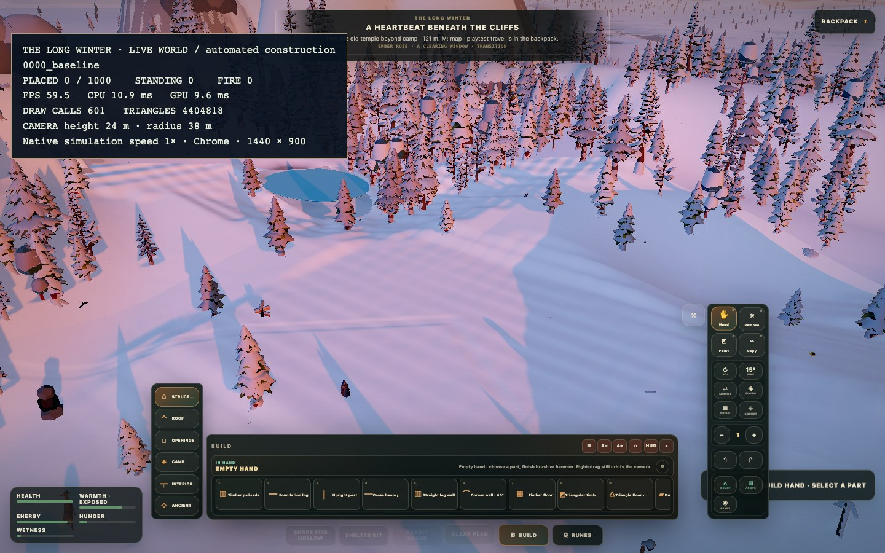
60.0 FPS · CPU 11.6 ms · GPU 9.2 ms · 100 osaa pystyssä · 0 palavaa
Ruutuaika p95 16.7 ms, pisin 16.8 ms. Kameran korkeus 16 m, etäisyys 36 m. Raunioita 0.
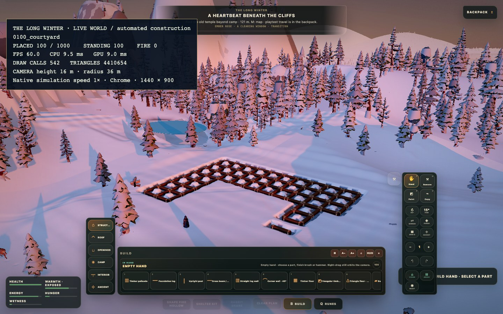
60.0 FPS · CPU 11.6 ms · GPU 9.3 ms · 100 osaa pystyssä · 0 palavaa
Ruutuaika p95 16.8 ms, pisin 16.8 ms. Kameran korkeus 35 m, etäisyys 30 m. Raunioita 0.
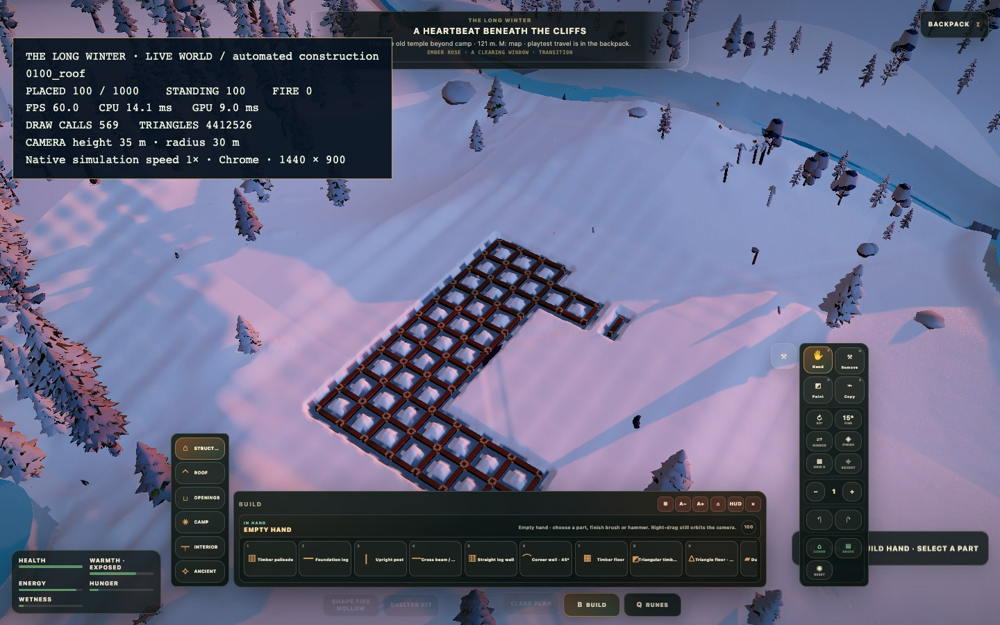
60.0 FPS · CPU 12.3 ms · GPU 8.0 ms · 100 osaa pystyssä · 0 palavaa
Ruutuaika p95 16.8 ms, pisin 16.8 ms. Kameran korkeus 12 m, etäisyys 46 m. Raunioita 0.
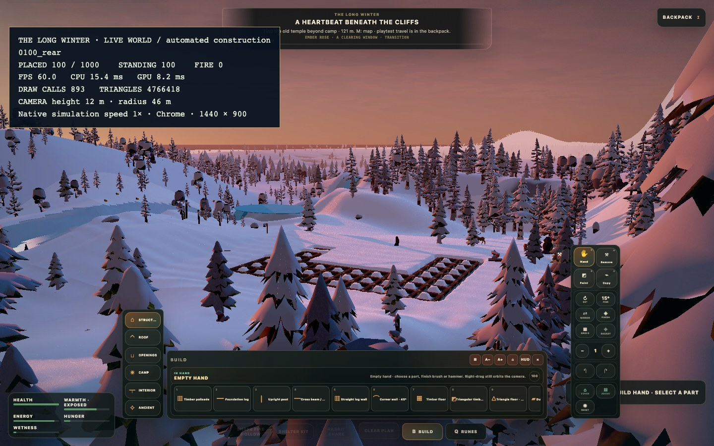
59.7 FPS · CPU 14.0 ms · GPU 9.4 ms · 200 osaa pystyssä · 0 palavaa
Ruutuaika p95 16.8 ms, pisin 33.3 ms. Kameran korkeus 16 m, etäisyys 36 m. Raunioita 0.
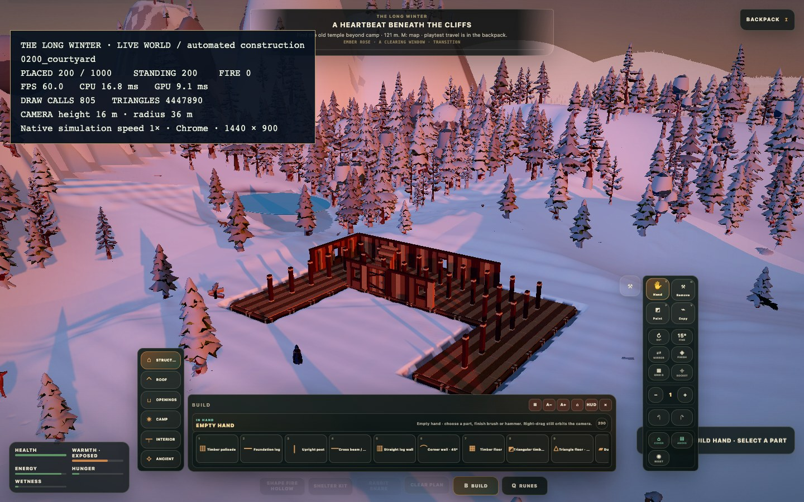
60.0 FPS · CPU 13.6 ms · GPU 9.3 ms · 200 osaa pystyssä · 0 palavaa
Ruutuaika p95 16.7 ms, pisin 16.8 ms. Kameran korkeus 35 m, etäisyys 30 m. Raunioita 0.
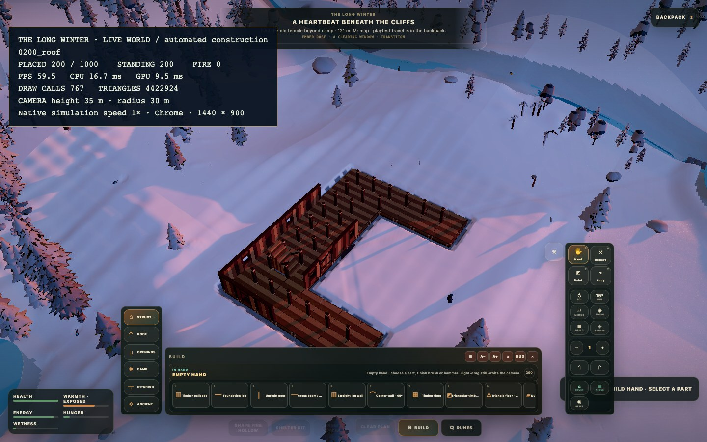
60.0 FPS · CPU 14.4 ms · GPU 9.0 ms · 200 osaa pystyssä · 0 palavaa
Ruutuaika p95 16.7 ms, pisin 16.8 ms. Kameran korkeus 12 m, etäisyys 46 m. Raunioita 0.
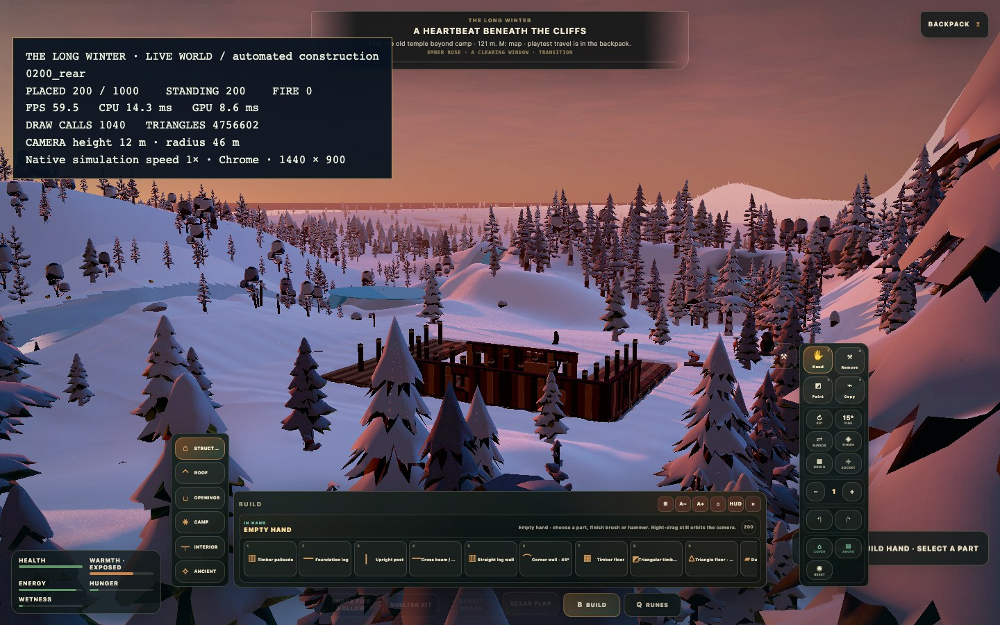
49.9 FPS · CPU 18.5 ms · GPU 9.9 ms · 300 osaa pystyssä · 0 palavaa
Ruutuaika p95 33.4 ms, pisin 33.4 ms. Kameran korkeus 16 m, etäisyys 36 m. Raunioita 0.
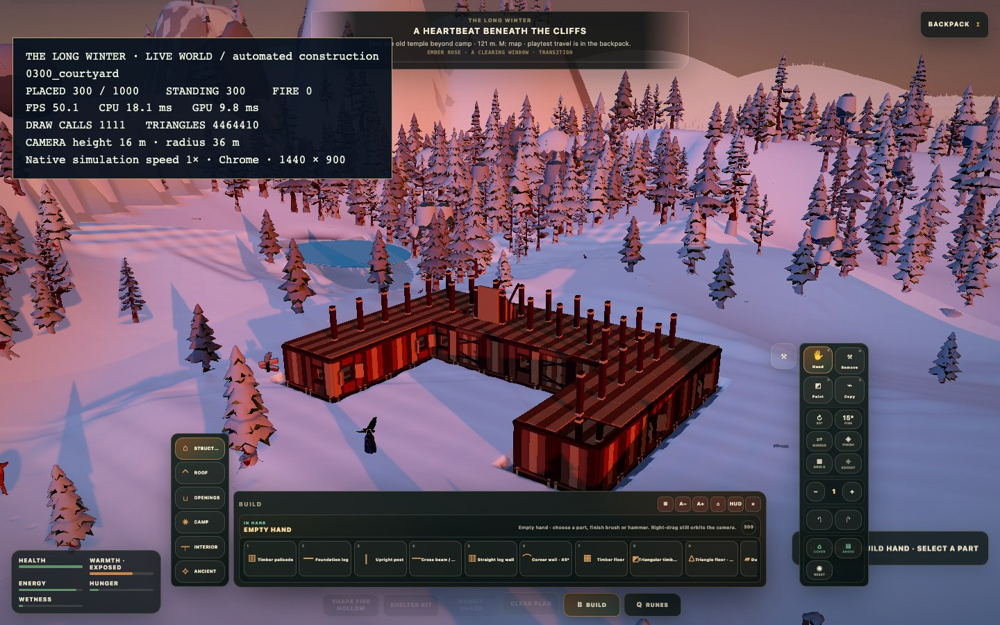
54.7 FPS · CPU 16.6 ms · GPU 9.7 ms · 300 osaa pystyssä · 0 palavaa
Ruutuaika p95 33.3 ms, pisin 33.4 ms. Kameran korkeus 35 m, etäisyys 30 m. Raunioita 0.
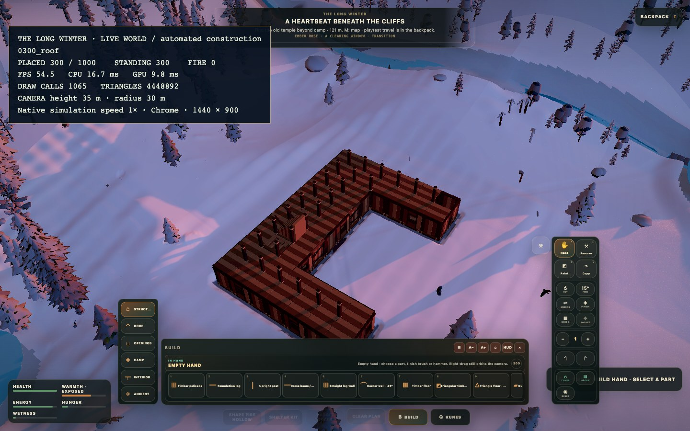
52.3 FPS · CPU 17.6 ms · GPU 8.8 ms · 300 osaa pystyssä · 0 palavaa
Ruutuaika p95 33.4 ms, pisin 33.4 ms. Kameran korkeus 12 m, etäisyys 46 m. Raunioita 0.
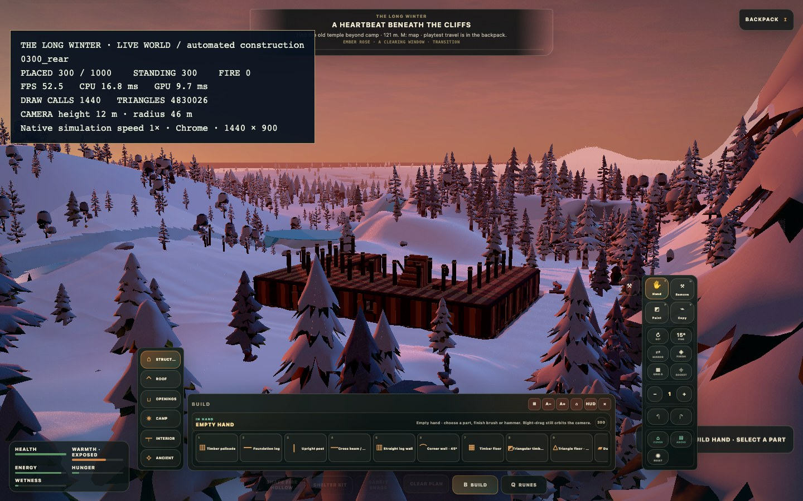
42.1 FPS · CPU 22.2 ms · GPU 10.0 ms · 400 osaa pystyssä · 0 palavaa
Ruutuaika p95 33.4 ms, pisin 33.4 ms. Kameran korkeus 16 m, etäisyys 36 m. Raunioita 0.
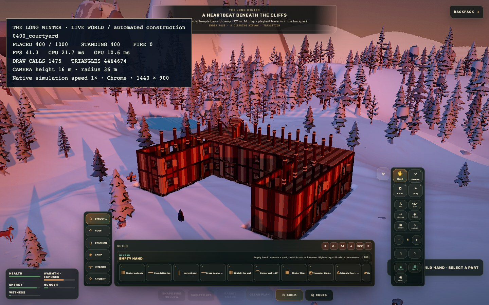
43.3 FPS · CPU 21.3 ms · GPU 10.4 ms · 400 osaa pystyssä · 0 palavaa
Ruutuaika p95 33.4 ms, pisin 33.4 ms. Kameran korkeus 35 m, etäisyys 30 m. Raunioita 0.
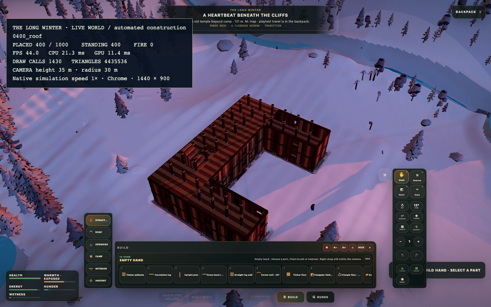
43.2 FPS · CPU 21.6 ms · GPU 10.4 ms · 400 osaa pystyssä · 0 palavaa
Ruutuaika p95 33.4 ms, pisin 33.4 ms. Kameran korkeus 12 m, etäisyys 46 m. Raunioita 0.
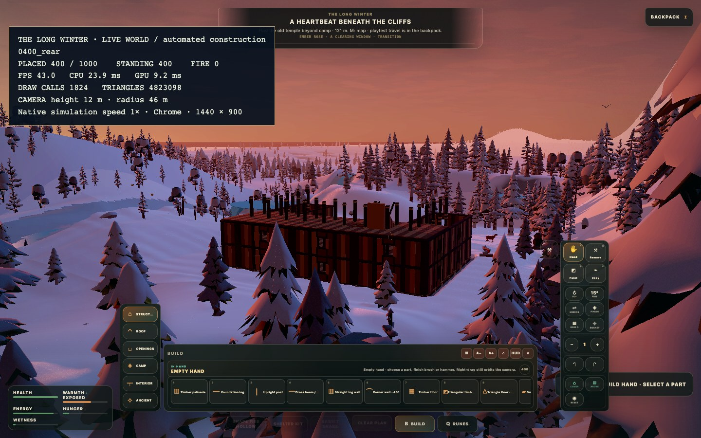
33.9 FPS · CPU 27.5 ms · GPU 11.1 ms · 500 osaa pystyssä · 0 palavaa
Ruutuaika p95 33.4 ms, pisin 49.9 ms. Kameran korkeus 16 m, etäisyys 36 m. Raunioita 0.
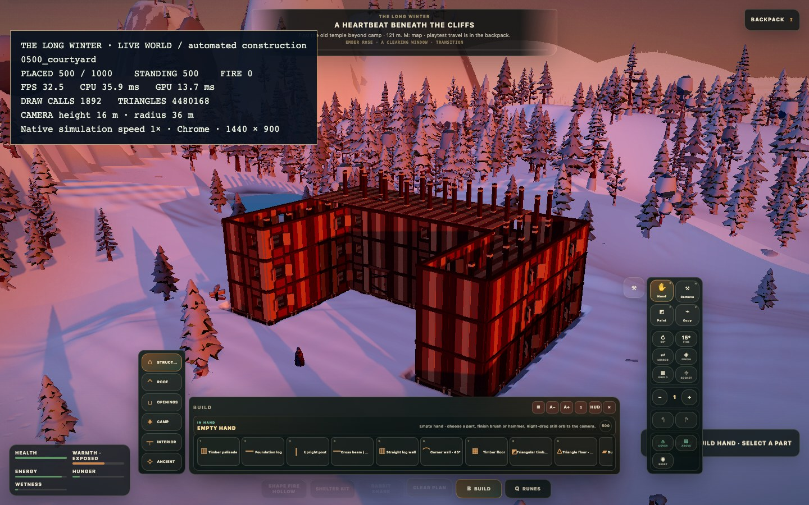
34.2 FPS · CPU 27.4 ms · GPU 10.7 ms · 500 osaa pystyssä · 0 palavaa
Ruutuaika p95 33.4 ms, pisin 50.0 ms. Kameran korkeus 35 m, etäisyys 30 m. Raunioita 0.
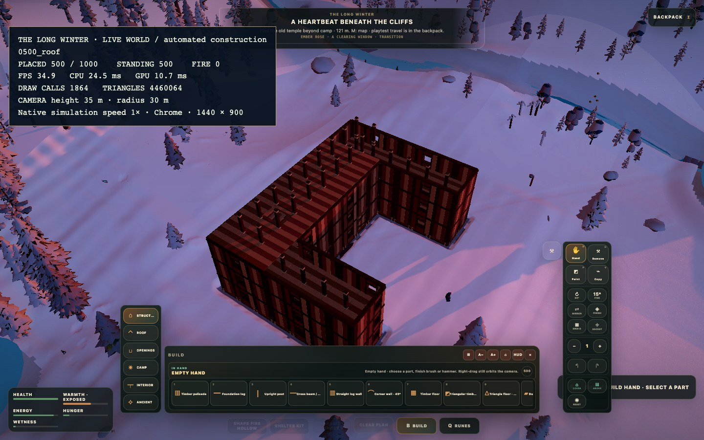
33.7 FPS · CPU 27.8 ms · GPU 10.9 ms · 500 osaa pystyssä · 0 palavaa
Ruutuaika p95 33.4 ms, pisin 50.0 ms. Kameran korkeus 12 m, etäisyys 46 m. Raunioita 0.
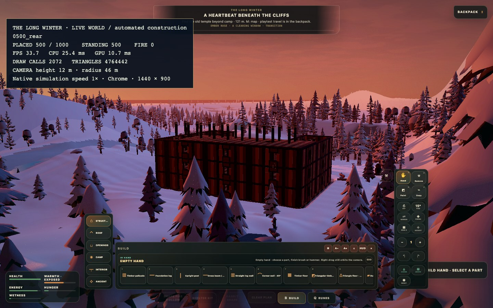
34.2 FPS · CPU 27.3 ms · GPU 11.8 ms · 600 osaa pystyssä · 0 palavaa
Ruutuaika p95 33.4 ms, pisin 50.0 ms. Kameran korkeus 16 m, etäisyys 36 m. Raunioita 0.
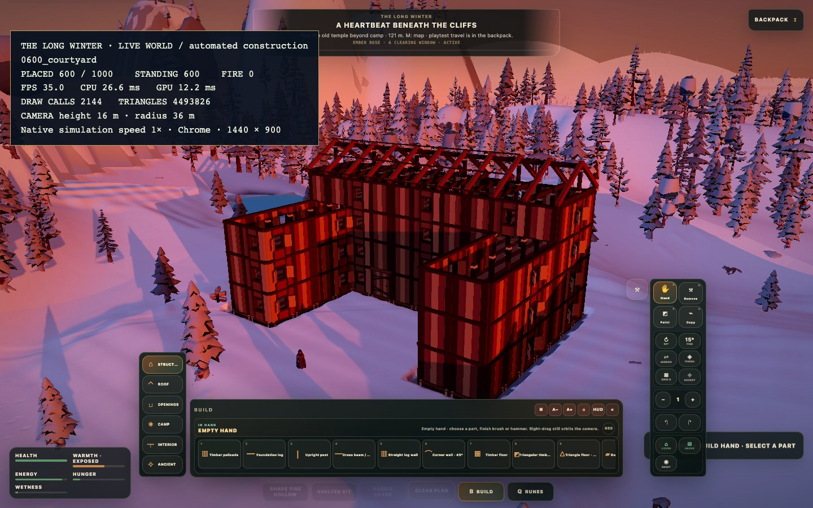
33.3 FPS · CPU 28.2 ms · GPU 10.7 ms · 600 osaa pystyssä · 0 palavaa
Ruutuaika p95 33.4 ms, pisin 49.9 ms. Kameran korkeus 35 m, etäisyys 30 m. Raunioita 0.
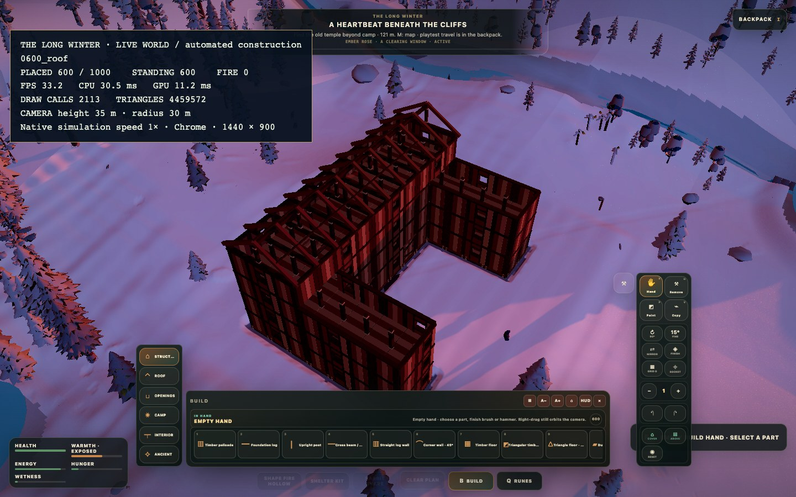
28.0 FPS · CPU 34.1 ms · GPU 11.0 ms · 600 osaa pystyssä · 0 palavaa
Ruutuaika p95 50.0 ms, pisin 50.1 ms. Kameran korkeus 12 m, etäisyys 46 m. Raunioita 0.
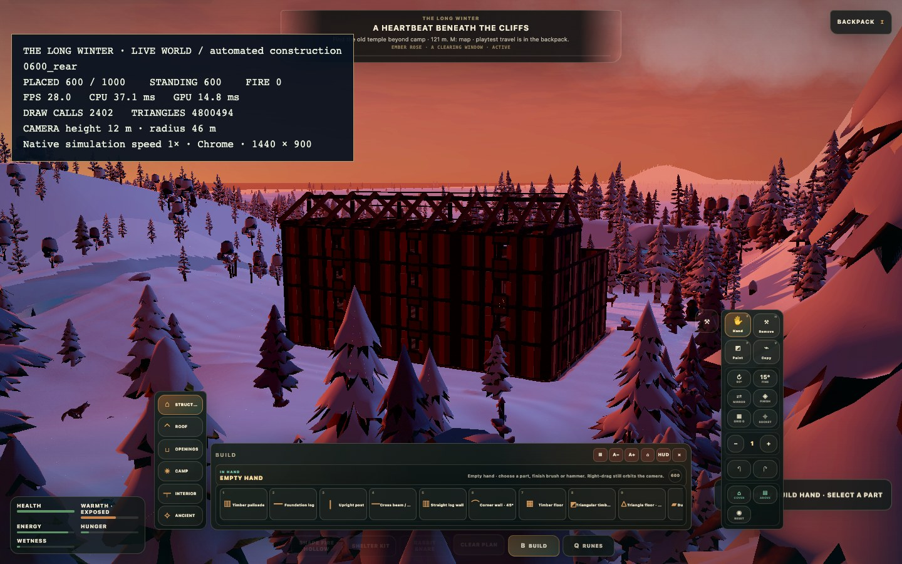
28.3 FPS · CPU 33.1 ms · GPU 12.1 ms · 700 osaa pystyssä · 0 palavaa
Ruutuaika p95 50.0 ms, pisin 50.1 ms. Kameran korkeus 16 m, etäisyys 36 m. Raunioita 0.
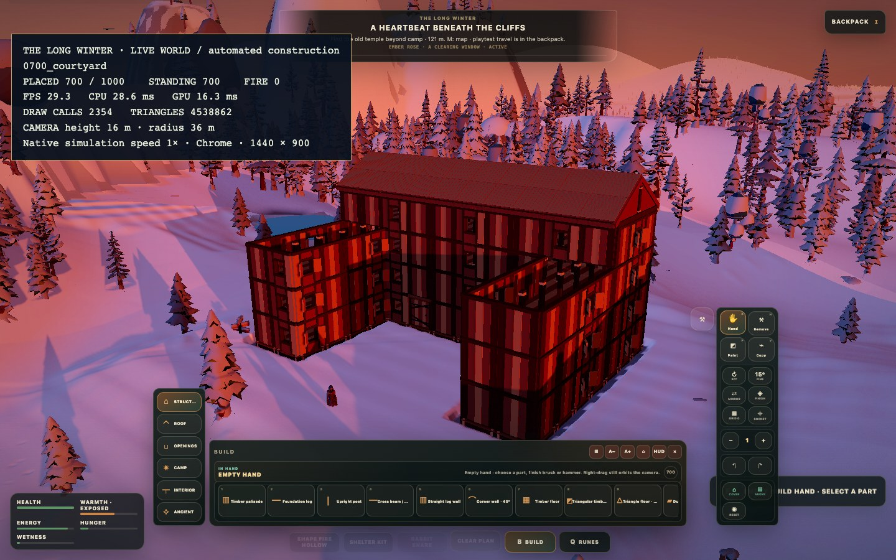
29.8 FPS · CPU 31.8 ms · GPU 11.2 ms · 700 osaa pystyssä · 0 palavaa
Ruutuaika p95 50.0 ms, pisin 50.1 ms. Kameran korkeus 35 m, etäisyys 30 m. Raunioita 0.
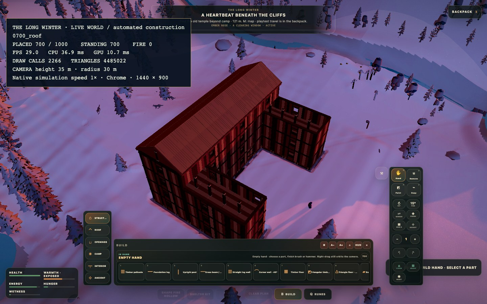
27.3 FPS · CPU 34.8 ms · GPU 10.8 ms · 700 osaa pystyssä · 0 palavaa
Ruutuaika p95 50.1 ms, pisin 50.1 ms. Kameran korkeus 12 m, etäisyys 46 m. Raunioita 0.
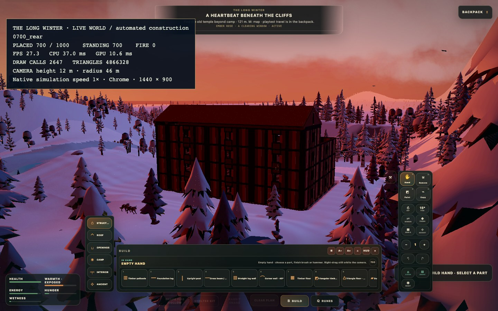
22.8 FPS · CPU 41.4 ms · GPU 13.5 ms · 800 osaa pystyssä · 0 palavaa
Ruutuaika p95 66.7 ms, pisin 83.3 ms. Kameran korkeus 16 m, etäisyys 36 m. Raunioita 0.
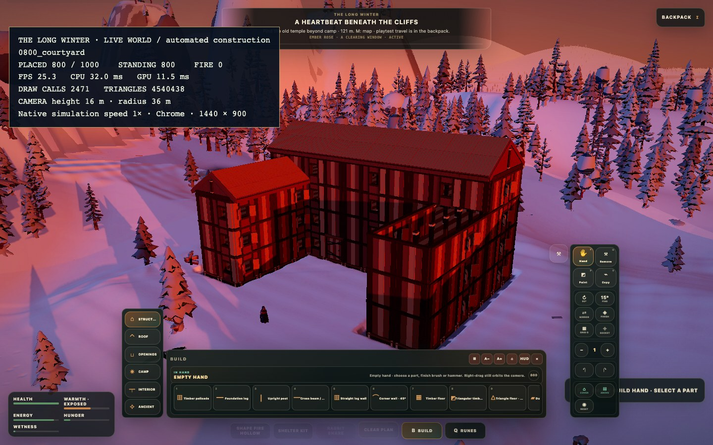
23.8 FPS · CPU 40.2 ms · GPU 13.5 ms · 800 osaa pystyssä · 0 palavaa
Ruutuaika p95 50.1 ms, pisin 66.7 ms. Kameran korkeus 35 m, etäisyys 30 m. Raunioita 0.
22.7 FPS · CPU 42.3 ms · GPU 12.2 ms · 800 osaa pystyssä · 0 palavaa
Ruutuaika p95 50.1 ms, pisin 66.7 ms. Kameran korkeus 12 m, etäisyys 46 m. Raunioita 0.
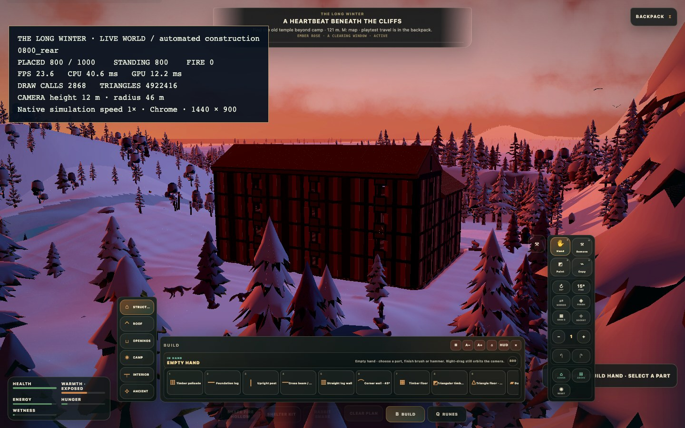
25.1 FPS · CPU 37.6 ms · GPU 13.4 ms · 900 osaa pystyssä · 0 palavaa
Ruutuaika p95 50.1 ms, pisin 66.6 ms. Kameran korkeus 16 m, etäisyys 36 m. Raunioita 0.
22.3 FPS · CPU 42.6 ms · GPU 13.4 ms · 900 osaa pystyssä · 0 palavaa
Ruutuaika p95 50.1 ms, pisin 66.6 ms. Kameran korkeus 35 m, etäisyys 30 m. Raunioita 0.
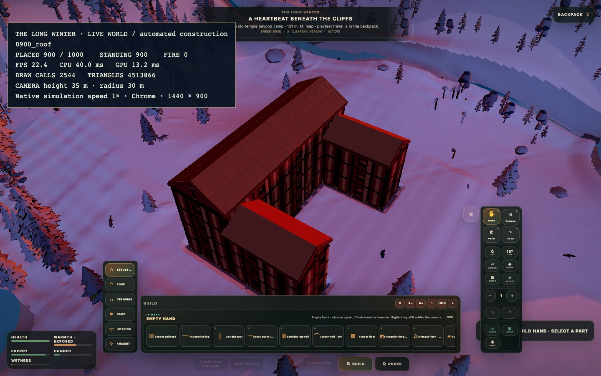
22.0 FPS · CPU 43.2 ms · GPU 12.8 ms · 900 osaa pystyssä · 0 palavaa
Ruutuaika p95 50.1 ms, pisin 99.9 ms. Kameran korkeus 12 m, etäisyys 46 m. Raunioita 0.
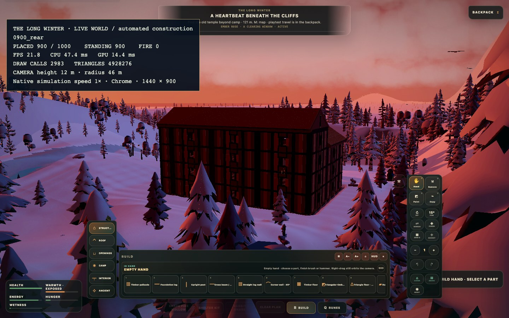
18.1 FPS · CPU 46.3 ms · GPU 16.0 ms · 1000 osaa pystyssä · 0 palavaa
Ruutuaika p95 66.7 ms, pisin 100.0 ms. Kameran korkeus 16 m, etäisyys 36 m. Raunioita 0.
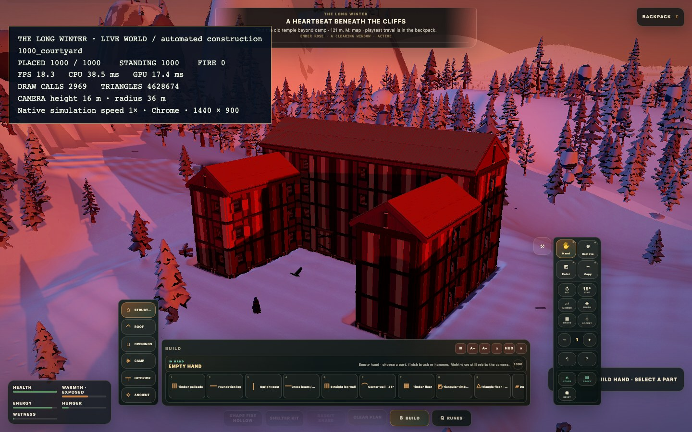
16.5 FPS · CPU 53.6 ms · GPU 17.2 ms · 1000 osaa pystyssä · 0 palavaa
Ruutuaika p95 83.3 ms, pisin 83.4 ms. Kameran korkeus 35 m, etäisyys 30 m. Raunioita 0.
17.8 FPS · CPU 50.0 ms · GPU 16.2 ms · 1000 osaa pystyssä · 0 palavaa
Ruutuaika p95 66.7 ms, pisin 66.8 ms. Kameran korkeus 12 m, etäisyys 46 m. Raunioita 0.
20.7 FPS · CPU 45.9 ms · GPU 16.4 ms · 1000 osaa pystyssä · 0 palavaa
Ruutuaika p95 66.7 ms, pisin 66.8 ms. Kameran korkeus 8 m, etäisyys 19 m. Raunioita 0.
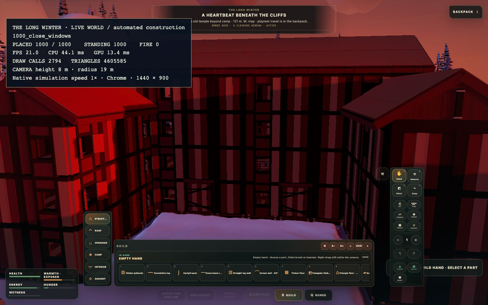
20.5 FPS · CPU 46.4 ms · GPU — ms · 1000 osaa pystyssä · 0 palavaa
Ruutuaika p95 66.7 ms, pisin 83.4 ms. Kameran korkeus 16 m, etäisyys 36 m. Raunioita 0. Tarkka mittaus oli tässä jaksossa päällä: GPU-luvut löytyvät erillisestä tracesta.
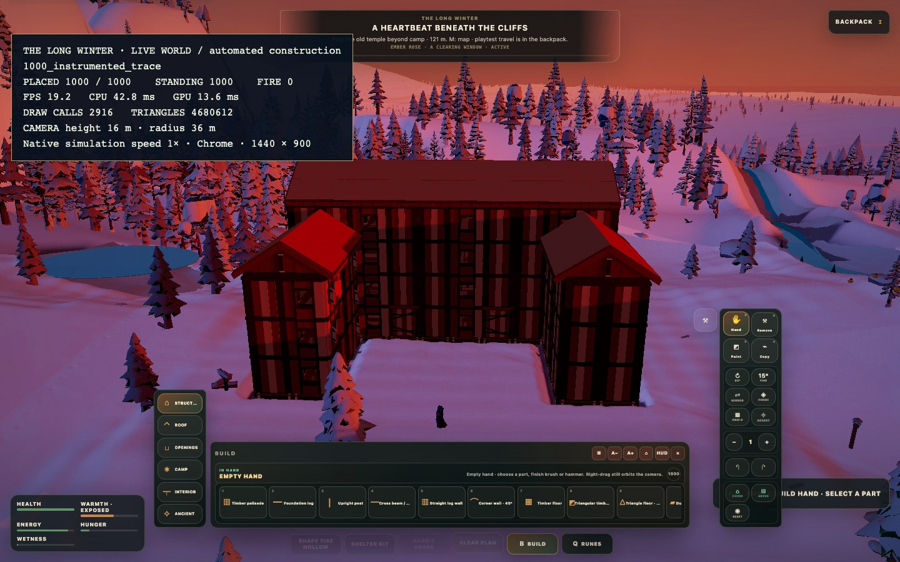
15.7 FPS · CPU 61.6 ms · GPU 18.8 ms · 1000 osaa pystyssä · 3 palavaa
Ruutuaika p95 83.4 ms, pisin 200.1 ms. Kameran korkeus 8 m, etäisyys 26 m. Raunioita 0.
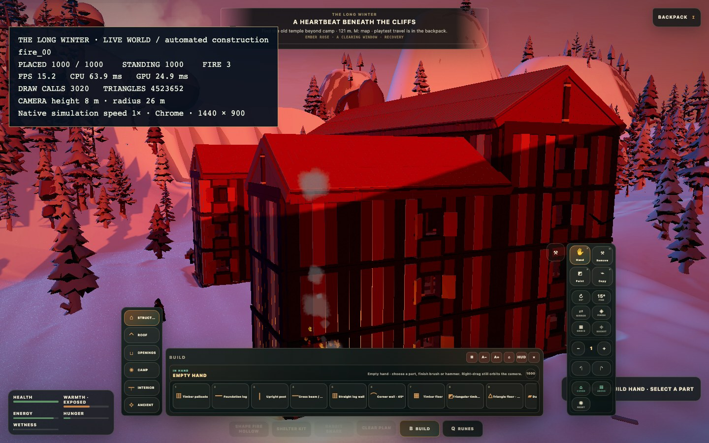
12.2 FPS · CPU 79.6 ms · GPU 20.3 ms · 1000 osaa pystyssä · 3 palavaa
Ruutuaika p95 133.3 ms, pisin 250.0 ms. Kameran korkeus 16 m, etäisyys 35 m. Raunioita 0.
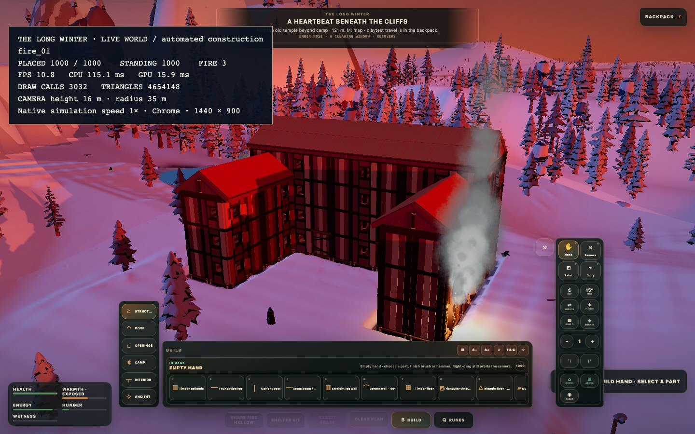
12.5 FPS · CPU 77.2 ms · GPU 19.1 ms · 1000 osaa pystyssä · 3 palavaa
Ruutuaika p95 116.7 ms, pisin 166.7 ms. Kameran korkeus 24 m, etäisyys 44 m. Raunioita 0.
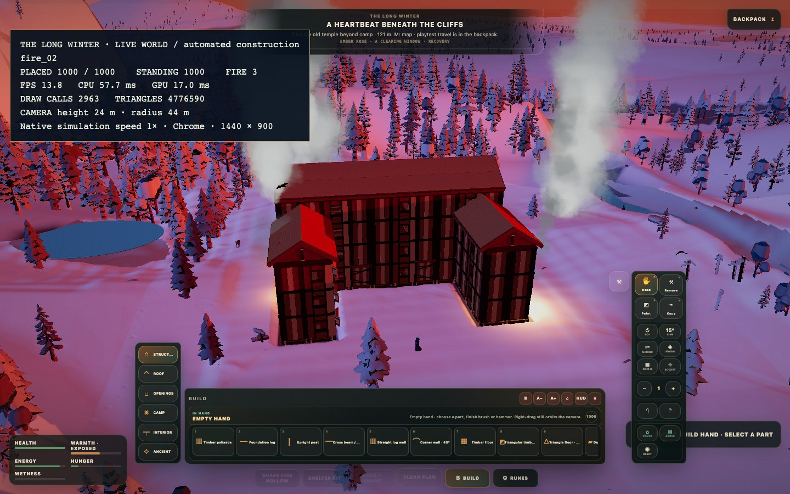
6.2 FPS · CPU 159.5 ms · GPU 16.5 ms · 998 osaa pystyssä · 1 palavaa
Ruutuaika p95 250.0 ms, pisin 2266.6 ms. Kameran korkeus 32 m, etäisyys 26 m. Raunioita 0.
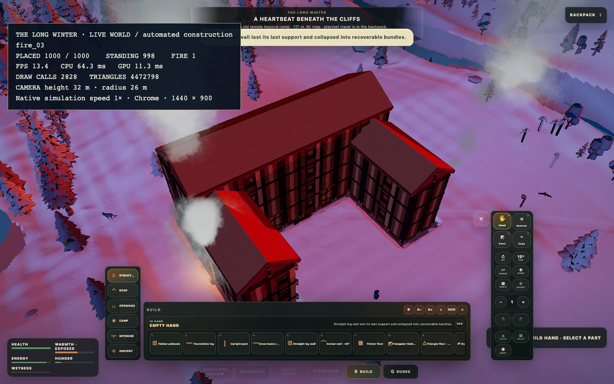
10.7 FPS · CPU 90.7 ms · GPU 13.4 ms · 997 osaa pystyssä · 0 palavaa
Ruutuaika p95 116.7 ms, pisin 2166.6 ms. Kameran korkeus 8 m, etäisyys 35 m. Raunioita 0.
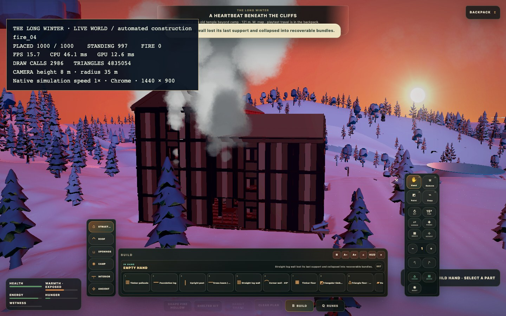
17.2 FPS · CPU 55.8 ms · GPU 14.5 ms · 997 osaa pystyssä · 0 palavaa
Ruutuaika p95 83.3 ms, pisin 83.4 ms. Kameran korkeus 16 m, etäisyys 44 m. Raunioita 0.
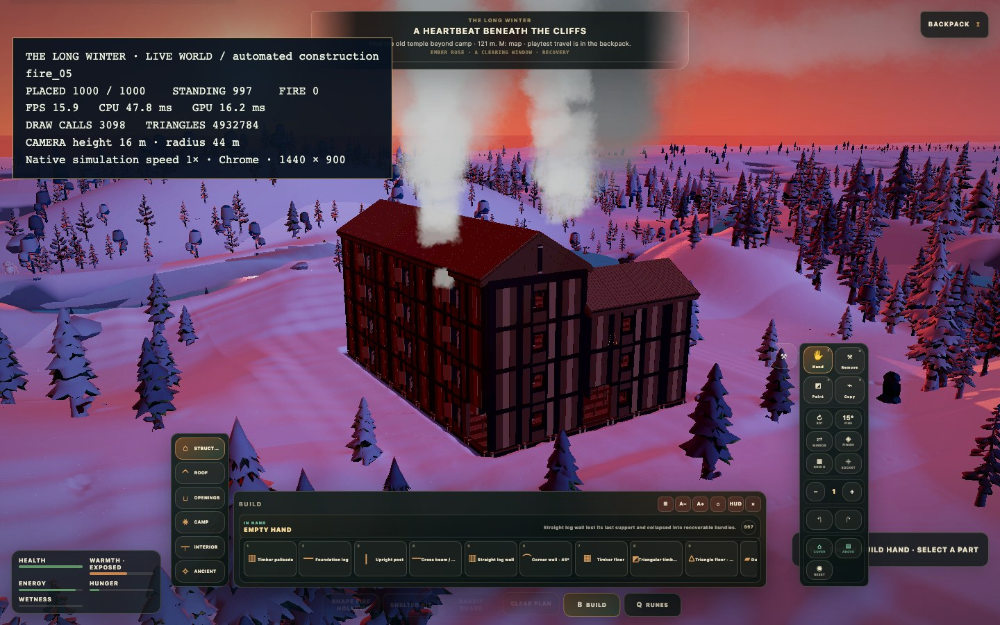
15.6 FPS · CPU 60.7 ms · GPU — ms · 997 osaa pystyssä · 3 palavaa
Ruutuaika p95 99.9 ms, pisin 166.7 ms. Kameran korkeus 24 m, etäisyys 26 m. Raunioita 0. Tarkka mittaus oli tässä jaksossa päällä: GPU-luvut löytyvät erillisestä tracesta.
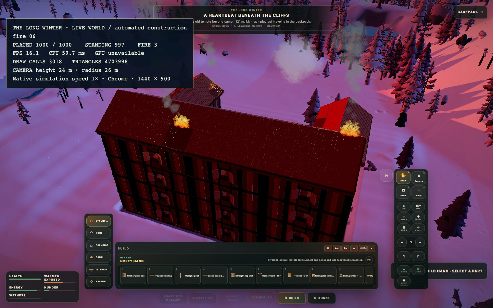
15.5 FPS · CPU 62.1 ms · GPU — ms · 997 osaa pystyssä · 3 palavaa
Ruutuaika p95 83.4 ms, pisin 100.0 ms. Kameran korkeus 32 m, etäisyys 35 m. Raunioita 0. Tarkka mittaus oli tässä jaksossa päällä: GPU-luvut löytyvät erillisestä tracesta.
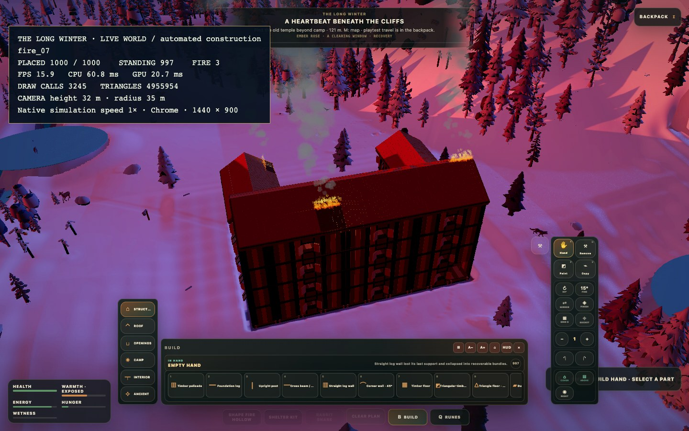
15.9 FPS · CPU 60.6 ms · GPU 15.8 ms · 997 osaa pystyssä · 26 palavaa
Ruutuaika p95 83.4 ms, pisin 133.4 ms. Kameran korkeus 8 m, etäisyys 44 m. Raunioita 0.
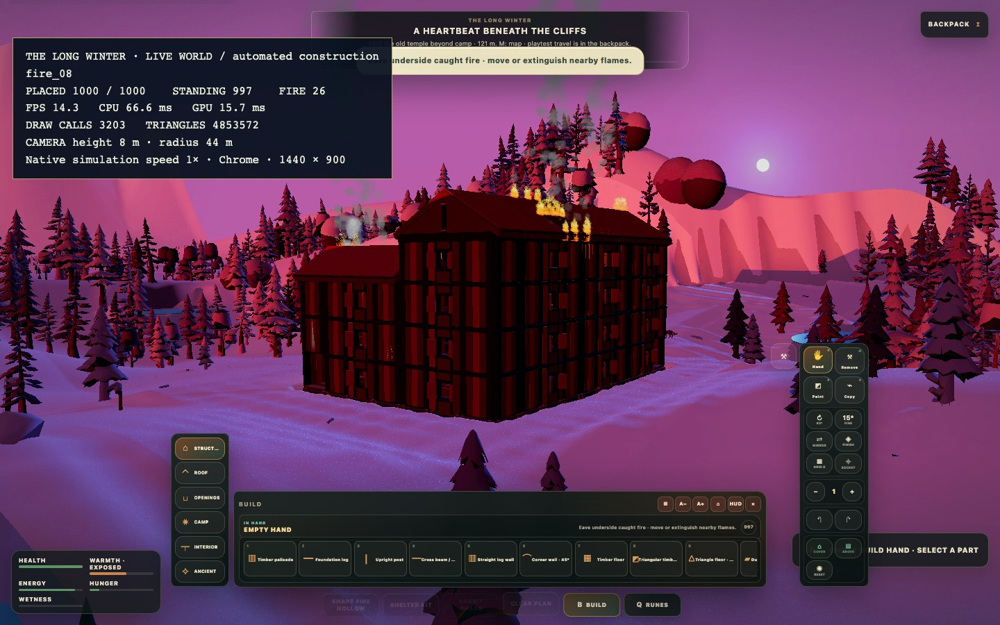
11.8 FPS · CPU 82.2 ms · GPU 22.4 ms · 997 osaa pystyssä · 66 palavaa
Ruutuaika p95 133.3 ms, pisin 150.0 ms. Kameran korkeus 16 m, etäisyys 26 m. Raunioita 0.
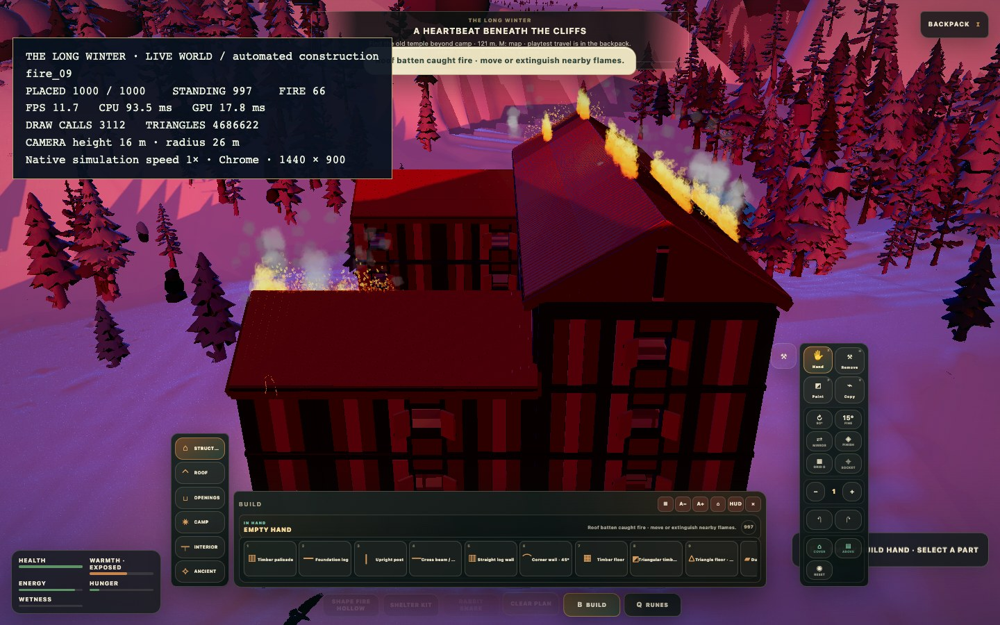
13.1 FPS · CPU 74.2 ms · GPU 18.9 ms · 997 osaa pystyssä · 66 palavaa
Ruutuaika p95 100.0 ms, pisin 116.7 ms. Kameran korkeus 24 m, etäisyys 35 m. Raunioita 0.
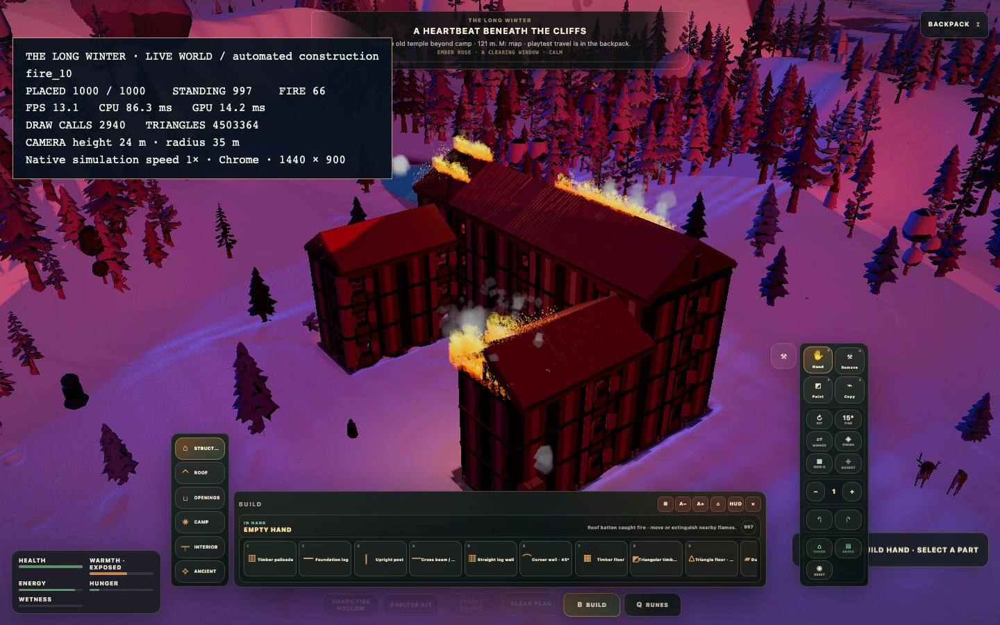
8.2 FPS · CPU 119.0 ms · GPU 23.7 ms · 992 osaa pystyssä · 77 palavaa
Ruutuaika p95 133.3 ms, pisin 2866.6 ms. Kameran korkeus 32 m, etäisyys 44 m. Raunioita 5.
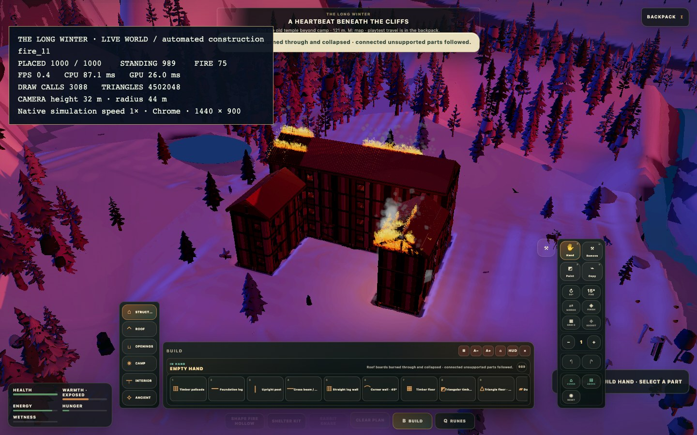